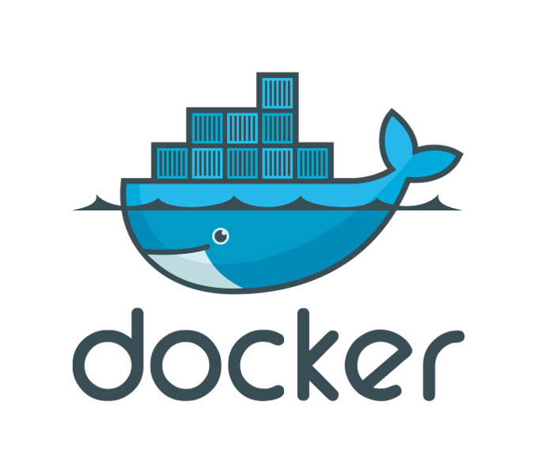

What is Docker?
Docker is an open platform for developers and sysadmins to build, ship, and run distributed applications
—Docker docs
(uh, ok…)
Better question: why do I care?
Ideal: our development environment
matches
our deployed environment
Reality check
ELB → nginx → app server → DB (RDS)
↓ ↘ ↗
static store server
content
I could run all of these on my development machine…
What if I have multiple clients?
(hint: I do! ;)
Each has their own
Maintaining these on a single shared server is challenging…
and only approximates production
Our environment
This may not seem like a big deal…
but packaging
Different vendor versions of common packages (e.g. requests)
Installation of certain difficult packages
(PIL, cElementTree)
may require different handling
In Python, we virtualenv
virtualenv provides a virtualized Python environment
Each virtualenv thinks it rules the roost
virtualization → isolation → freedom
$ pip list | grep requests requests (2.3.0) $ workon brighttrac (brighttrac) $ pip list | grep requests (brighttrac) $ workon talks (talks) $ pip list | grep requests requests (2.5.1) (talks) $ workon ibash (ibash) $ pip list | grep requests requests (2.5.3) (ibash) $
We update each of our environments as circumstances dictate,
without fear
of breaking anything else
How do we do this for applications?
Well, what’s an application?
Let’s talk about processes
A process is just a running program
CPU
process ↗ Memory
· program executable → Disk
· PCB ↘ Network
…
But modern operating systems do not allow
direct access
to system resources
“All problems in computer science can be solved by another level of indirection”
—David Wheeler
K
E CPU
process R ↗ Memory
· program executable → N → Disk
· PCB E ↘ Network
L …
K
process0 E CPU
process1 R ↗ Memory
process2 N → Disk
process3 E ↘ Network
⋮ L …
By forcing applications to use the kernel’s interface, modern operating systems offer
process isolation
What if we virtualized the kernel?
V
process0 → I → CPU0, Memory0, Disk0, Network0
process1 → R → CPU1, Memory1, Disk1, Network1
process2 → T → CPU2, Memory2, Disk2, Network2
process3 → U → CPU3, Memory3, Disk3, Network3
⋮ A …
L
VM-like application isolation,
process-like overhead
via a virtualized Linux kernel
(my definition)
Each Docker container thinks it has its own
CPU, memory, file system, network stack
Docker is fast
Docker is lightweight
Docker containers are miniature servers
build, start, hook together, and tear down
cheaply, efficiently, and portably
Try it! Right now!
(seriously!)
Docker for Developers
How can I work with my host setup and tools
and
have edits reflected in the running Docker containers?
Docker concepts
container
application process running inside a virtualized environment
Simple example: busybox shell
$ docker run -it --rm busybox
/ # ps ax
PID USER COMMAND
1 root /bin/sh
9 root ps ax
/ # ls /
bin dev etc home lib ...
/ # ls /home
default ftp
/ #
The containerized process shows up in the host’s process list:
17691 pts/11 Sl+ 0:00 docker run -it --rm busybox 17697 pts/12 Ss+ 0:00 /bin/sh
All sorts of options for port forwarding, network connections, etc.
$ docker run -d -p 5432:5432 postgres 736b803a915e83efd9d93e91d58dca2245bc515d3539727774a4495366bb9d0d $ docker logs 736b803a 2015-03-12 04:21:47 UTC LOG: database system was interrupted; last ... 2015-03-12 04:21:47 UTC LOG: database system was not properly shut ... 2015-03-12 04:21:47 UTC LOG: redo starts at 0/1783828 2015-03-12 04:21:47 UTC LOG: record with zero length at 0/1783868 2015-03-12 04:21:47 UTC LOG: redo done at 0/1783828 2015-03-12 04:21:47 UTC LOG: last completed transaction was at log ... 2015-03-12 04:21:47 UTC LOG: database system is ready to accept ... 2015-03-12 04:21:47 UTC LOG: autovacuum launcher started
(Did you catch that?
Yup, I just created a Postgres server out of thin air… :)
View running containers with ps:
$ docker ps CONTAINER ID IMAGE COMMAND CREATED STATUS PORTS NAMES 736b803a915e postgres:9.3 "/usr/lib/postgresql 26 seconds ago Up 25 seconds 0.0.0.0:5432->5432/tcp fervent_mestorf $
or show all your containers:
$ docker ps -a CONTAINER ID IMAGE COMMAND … 4383f9b8e748 postgres:9.3 "psql -h pg_server p … 2621003bd7c1 postgres:9.3 "/usr/lib/postgresql … ce3b7bd4cc96 postgres:9.4 "/usr/lib/postgresql … 82e1f606b3de miniscule:latest "/true" … c4bbab6e79be 142bbf219697 "/bin/sh -c 'apt-get … f2956d7148a3 142bbf219697 "/bin/sh -c 'apt-get … db99ad5f6284 envirocert:latest "/home/docker/docker … 55ae9072bba4 nha:latest "/home/docker/docker … 0af6c9a90f48 postgres:9.3 "/usr/lib/postgresql … 7dc4327efb80 elyase/pyrun:3.4 "/bin/sh" … d2862f2aeca4 elyase/pyrun:3.4 "/bin/sh" … 5c4eb70b9d40 clarus_nginx:latest "nginx" … ba2c45b53412 nha:latest "/home/docker/docker … 9fa023adc171 nha:latest "/home/docker/docker … 75f7c4fd2a9c nha:latest "/home/docker/docker … 64ac4fbc0ac1 postgres:9.3 "/usr/lib/postgresql …
Container management:
$ docker stop [-t x] <CONTAINER> $ docker restart [-t x] <CONTAINER> $ docker logs [-f] <CONTAINER> $ docker attach <CONTAINER> $ docker rm [-f] <CONTAINER>
Stop all running containers now:
$ docker stop -t 0 $(docker ps -q)
inspect provides a ton of information about containers
Get a container’s IP address:
$ docker inspect -f '{{.NetworkSettings.IPAddress}}' pg_server
172.17.0.11
Yay automation!
$ pgcli -h $(docker inspect -f '{{.NetworkSettings.IPAddress}}' pg_server) \
> postgres postgres
Version: 0.16.1
Chat: https://gitter.im/amjith/pgcli
Mail: https://groups.google.com/forum/#!forum/pgcli
Home: http://pgcli.com
postgres>
Links build little virtual network bridges between containers
Run a PG server:
$ docker run -d --name pg_server postgres 2621003bd7c1ef6cf167bae2c3ce981d696522b3016aa5af74f2e192598816e1
Run a second psql client container, linked to the first:
$ docker run -it --rm --link pg_server:pg_server postgres psql \ > -h pg_server postgres postgres psql (9.3.5) Type "help" for help. postgres=#
Image: a saved Docker application that can be used to create running containers
Get them from the registry:
$ docker pull redis
# … wait while redis downloads
$ docker run --rm -it redis
[1] 12 Mar 04:43:30.755 # Warning: no config file specified, using...
_._
_.-``__ ''-._
_.-`` `. `_. ''-._ Redis 2.8.19 (00000000/0) 64 bit
.-`` .-```. ```\/ _.,_ ''-._
( ' , .-` | `, ) Running in stand alone mode
|`-._`-...-` __...-.``-._|'` _.-'| Port: 6379
| `-._ `._ / _.-' | PID: 1
or make your own!
$ cd miniscule $ ls -l total 36 -rw-r----- 1 drocco drocco 46 Dec 4 16:39 Dockerfile -rw-r----- 1 drocco drocco 55 Dec 4 16:39 README -rwx------ 1 drocco drocco 125 Dec 4 16:40 true-asm $ cat Dockerfile FROM scratch ADD true-asm /true CMD ["/true"]
$ docker build -t mini . Sending build context to Docker daemon 4.096 kB Sending build context to Docker daemon Step 0 : FROM scratch ---> Step 1 : ADD true-asm /true ---> 4a5924f63d2d Removing intermediate container 84292bb778e6 Step 2 : CMD /true ---> Running in e2bb67e2042b ---> 17f92751929f Removing intermediate container e2bb67e2042b Successfully built 17f92751929f
$ docker images REPOSITORY TAG IMAGE ID CREATED VIRTUAL SIZE mini latest 17f92751929f 3 minutes ago 125 B
My base Python image:
FROM ubuntu:trusty MAINTAINER drocco@gmail.com # system packages RUN apt-get update RUN apt-get install -y python-pip python-dev libjpeg-dev libz-dev libpq-dev git RUN pip install --download-cache /tmp -U pip RUN pip install --download-cache /tmp -U setuptools virtualenv # allow PIL to find 64-bit libs RUN ln -s /usr/lib/x86_64-linux-gnu/libjpeg.so /usr/lib RUN ln -s /usr/lib/x86_64-linux-gnu/libz.so /usr/lib # without this cElementTree will not build on trusty RUN echo '#define HAVE_MEMMOVE 1' >> /usr/include/python2.7/pyconfig.h # add a docker user RUN adduser --gecos 'Normal Docker (non-root) user' --home /home/docker --disabled-password docker
Volume: container storage
2 kinds of volumes:
Volumes can be shared between multiple containers
Docker is oriented toward self-sufficient containers…
Building images using host-editable source installs is not really the “Docker way”
Docker for Developers
host volumes + scripts + docker commit == ♥
Idea: use a script to install hosted, editable libraries
docker commit → create an image from a container
clarus_base → client 0
client 1
client 2
for thing in dependencies;
do
cd thing
python setup.py develop
cd -
done
dockerkit contains examples of how to do it
https://github.com/drocco007/dockerkit
(Grab me later if you want to discuss the gory details :)
Docker has approx. 6 zillion command line switches
Use a script to keep your sanity
app server:
case "$COMMAND" in
@(bt|brighttrac|server) )
docker run -d \
-p 9085:9085 \
-v /home/drocco/source/brightlink:/brightlink_dev \
-u docker \
--link nha_db:dbhost \
--link nha_store:store.example.com \
--volumes-from vollog \
--name nha_server \
$IMAGE \
/home/docker/docker_env/bin/python …
;;
Uhm, no.
$ docker run --rm pybase pip list chardet (2.0.1) colorama (0.2.5) html5lib (0.999) pip (6.0.6) requests (2.2.1) setuptools (11.3.1) six (1.5.2) urllib3 (1.7.1) virtualenv (12.0.5)
virtualenv isolates you from vendor dependencies
virtualenv enables non-root container processes
Docker
Thank you!
♥
@drocco007